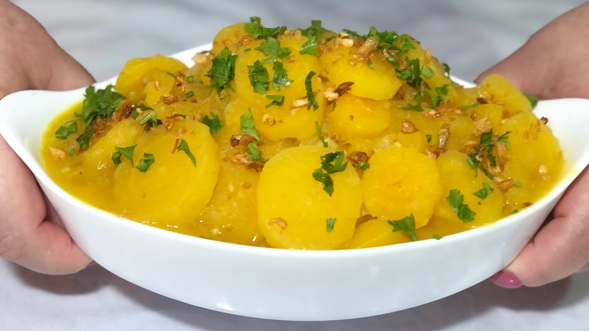

A gastronomia friburguense é um dos grandes destaques culturais de Nova Friburgo, refletindo a diversidade de povos que contribuíram para a formação da cidade ao longo de sua história. Colonizada inicialmente por suíços e posteriormente enriquecida pela presença de alemães, italianos, portugueses e outros grupos de imigrantes, a culinária local reúne tradições europeias e ingredientes típicos da região serrana do estado do Rio de Janeiro. Entre os produtos mais valorizados da gastronomia friburguense estão os queijos artesanais, embutidos, trutas e geleias produzidos nas áreas rurais do município. O clima ameno da serra favorece a criação de trutas em águas frias e cristalinas, tornando esse peixe um dos símbolos da culinária local. Além disso, os restaurantes da cidade oferecem pratos inspirados nas cozinhas suíça e alemã, como fondues, salsichas artesanais e receitas à base de batata. A produção de hortaliças, frutas e flores também influencia a culinária da região, proporcionando ingredientes frescos para diversos pratos. Os cafés, confeitarias e chocolaterias são muito apreciados por moradores e turistas, especialmente durante os meses mais frios, quando a procura por bebidas quentes e sobremesas aumenta. Outro aspecto importante da gastronomia friburguense são os festivais e eventos gastronômicos que valorizam os produtores locais e promovem a cultura alimentar da cidade. Essas iniciativas contribuem para fortalecer a economia regional e preservar tradições transmitidas entre gerações. Dessa forma, a gastronomia de Nova Friburgo representa um rico patrimônio cultural, combinando sabores, técnicas e costumes de diferentes origens. A culinária local não apenas satisfaz o paladar, mas também conta a história da cidade e de seus habitantes, tornando-se uma experiência marcante para quem visita a região serrana fluminense.
